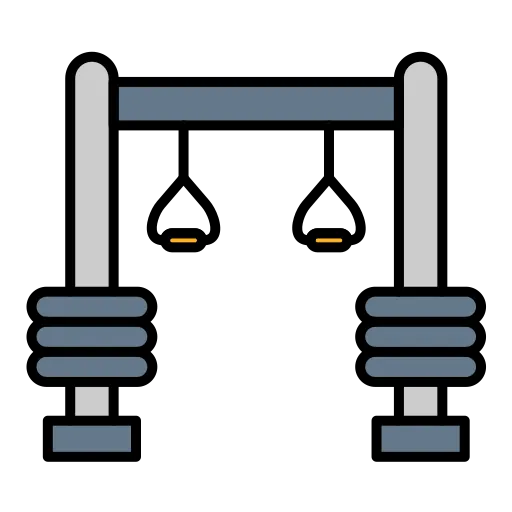
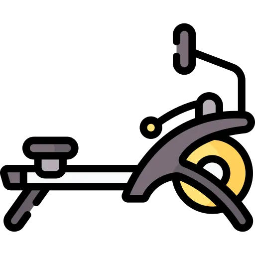

有了场地，就会练了吗？
不均衡不只在硬件。场地铺好了，可“有没有人教、练得科不科学、约不约得到人”—— 这些“软”的东西，是更难、更慢补上的一程。
先说成就：“量”，正在快速补齐
软资源的“量”补得很快——社会体育指导员每千人 2.77 名、经常锻炼比例 38.52%，两项都已越过国家目标线。
数据来源：国家体育总局《“十四五”全民健身迈上提质增效新台阶》、《2025 年全民健身活动状况调查公报》。 指导员密度与锻炼率的分省可比数据未公开，本页按城乡 / 软硬维度论证，不做省级排名。详见数据说明。
有场地、缺指导；会锻炼，但不够科学。
这不是我们的判断，而是国家体育总局《2025 年全民健身活动状况调查公报》的原话。 它同时点名：城乡和区域发展仍不均衡，专业健身指导、组织化支持与持续性服务覆盖不足。 硬件铺到位了，软件还在追。

“硬”的摆出来了，“软”的还跟不上
硬件 · 基本到位
看得见的，铺好了
人均场地 3.0㎡（达标）；90.4% 的居民反映步行或骑车 15 分钟内就有场地设施，“15 分钟健身圈”基本实现。
软件 · 仍有缺口
看不见的，还差一截
专业健身指导、组织化支持、持续性服务，官方直言“覆盖不足”； “有场地、缺指导”“会锻炼但不够科学”，在城乡之间尤其明显。
改善确实在发生——只是还不够。
较 2020 年 +5.0pp
较 2020 年 +9.3pp
仍有近一半人没真正被指导过
器材下了乡，“有人教”还在追赶。
一个细节能说明问题：国家专门搞了“万村女性社会体育指导员培训计划”，已在 3.3 万个行政村培养 9.4 万名农村女性指导员。要专门“补指导员”，恰恰说明农村的软资源缺口 ——硬件（器材）下了乡，“有人教、教得对”仍在追赶。

硬件可以“铺”，软件得“养”。
而养人、养组织、养习惯，是更慢的一程。
平均的数字里，谁的声音最轻？